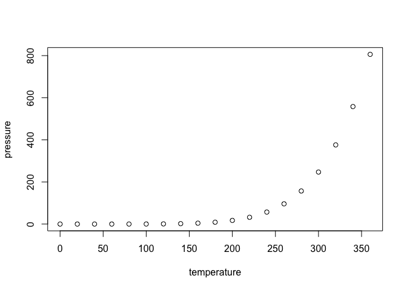

The goal of tabular is to …
Installation
You can install the development version of tabular like so:
# FILL THIS IN! HOW CAN PEOPLE INSTALL YOUR DEV PACKAGE?Example
This is a basic example which shows you how to solve a common problem:
What is special about using README.Rmd instead of just README.md? You can include R chunks like so:
summary(cars)
#> speed dist
#> Min. : 4.0 Min. : 2.00
#> 1st Qu.:12.0 1st Qu.: 26.00
#> Median :15.0 Median : 36.00
#> Mean :15.4 Mean : 42.98
#> 3rd Qu.:19.0 3rd Qu.: 56.00
#> Max. :25.0 Max. :120.00You’ll still need to render README.Rmd regularly, to keep README.md up-to-date. devtools::build_readme() is handy for this.
You can also embed plots, for example:

In that case, don’t forget to commit and push the resulting figure files, so they display on GitHub and CRAN.
Code of Conduct
Please note that the tabular project is released with a Contributor Code of Conduct. By contributing to this project, you agree to abide by its terms.